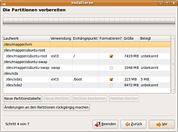

System verschlüsseln
Achtung!
Das Verschlüsseln von Daten kann der Sicherheit bei der Wahrung der Privatsphäre oder sensibler Daten dienen, beinhaltet aber in der Konsequenz, dass eine eventuell zukünftig notwendige Datenrettung durch eine manuelle Entschlüsselung erschwert werden kann. Eine Entscheidung für oder gegen eine Datenverschlüsselung sollte daher nicht leichtfertig erfolgen. Empfohlen wird eine individuelle Nutzen-Risiko-Abwägung bezogen auf Anwendungsbereich, Computerkenntnisse des Nutzers oder ähnliche Faktoren, um die Gefahr eines späteren Datenverlusts zu minimieren.
Ohne ein sicheres Kennwort nutzt die stärkste Verschlüsselung nichts! Wie man Passwörter am besten wählt, steht hier: Sicherheits 1x1
Dieser Artikel wurde für die folgenden Ubuntu-Versionen getestet:
Ubuntu 16.04 Xenial Xerus
Ubuntu 14.04 Trusty Tahr
Artikel für fortgeschrittene Anwender
Dieser Artikel erfordert mehr Erfahrung im Umgang mit Linux und ist daher nur für fortgeschrittene Benutzer gedacht.
Zum Verständnis dieses Artikels sind folgende Seiten hilfreich:
 Das Ubuntu-System lässt sich seit Ubuntu 12.10 bereits automatisch bei der Installation verschlüsseln. Diese Anleitung installiert Ubuntu durch manuelle statt automatische Partitionierung in einem verschlüsselten Bereich, so dass man Einfluss auf die Partitionierung hat. Wie bei der automatischen Installation bleibt die Boot-Partition, und bei einem UEFI-System zusätzlich die EFI-Partition, unverschlüsselt. Hier befinden sich lediglich Bootlader und Kernel, weil der Bootlader keine Daten aus dem verschlüsselten Bereich lesen kann.
Das Ubuntu-System lässt sich seit Ubuntu 12.10 bereits automatisch bei der Installation verschlüsseln. Diese Anleitung installiert Ubuntu durch manuelle statt automatische Partitionierung in einem verschlüsselten Bereich, so dass man Einfluss auf die Partitionierung hat. Wie bei der automatischen Installation bleibt die Boot-Partition, und bei einem UEFI-System zusätzlich die EFI-Partition, unverschlüsselt. Hier befinden sich lediglich Bootlader und Kernel, weil der Bootlader keine Daten aus dem verschlüsselten Bereich lesen kann.
Es wird der Logical Volume Manager eingesetzt, da mit diesem beim Start nur eine Passworteingabe nötig ist, der Ruhezustand (S4) noch funktioniert und er, was die Partitionierung angeht, sehr flexibel ist.
Alternativ ist es auch möglich, das System ohne LVM zu verschlüsseln, jedoch ist diese Variante weniger flexibel, was nachträgliche Partitionsänderungen innerhalb des LVM angeht. Außerdem kann man das System auch mit der nicht-grafischen Installation verschlüsseln, was die Option der Wahl ist, wenn keine Internet-Verbindung zur Verfügung steht.
Vorbereitungen¶
Hinweis:
Alle folgenden Befehle benötigen Root-Rechte. Man sollte also entweder immer sudo vor das betreffende Kommando setzen oder mit sudo -s Root-Status erlangen!
Wenn sich auf dem Computer schon ein Betriebssystem (wie beispielsweise Windows, Mac OS oder ein anderes Linux-System) oder wichtige Daten befinden, sollte von den wichtigen Daten unbedingt eine Sicherung erstellt werden. Wie bei jeder Veränderung am Computer kann immer auch etwas schiefgehen.
Zur Installation wird die normale Desktop-CD benötigt. Diese einfach booten [1]. Nachdem das Live-System geladen wurde, jedoch nicht das Installationsprogramm ausführen. Es wird zwingend eine funktionierende Internetverbindung [2] benötigt, da Programme nachinstalliert werden müssen.
Software und Kernelmodule laden¶
Bei älteren Versionen unterstützt die Desktop-CD von Haus aus kein LVM. Mindestens seit 13.10 ist die Unterstützung aber vorhanden. Bei älteren Versionen kann man dies durch die Installation des folgenden Pakets [3] korrigieren:
lvm2
 mit apturl
mit apturl
Paketliste zum Kopieren:
sudo apt-get install lvm2
sudo aptitude install lvm2
Partitionierung¶
Hinweis:
/dev/sdX1 bzw. /dev/sdX2 muss im Folgenden immer durch die tatsächliche Bezeichnung [10] der Partition ersetzt werden!
Zwei Partitionen werden benötigt [5]:
/dev/sdX1 (ext4)
Boot-Partition (unverschlüsselt)
Größe: mindestens 250 MB (um für 4 Kernel Platz zu lassen, genauere Erklärung unter Manuelle Partitionierung)
/dev/sdX2 (unformatiert)
verschlüsseltes LVM-Volume
Größe: üblicherweise der verfügbare Rest, aber mindestens 8 GB (root + Arbeitsspeicher)
Experten-Info:
Man sollte sich vorab darüber informieren, ob der Rechner mit einem EFI Bootmanagement versehen ist und wie die Festplatte(n) formatiert wurden! Weitere Informationen stehen unter EFI Grundlagen zur Verfügung!
Bei EFI-Systemen ist zu beachten, dass auf jeden Fall neben der unverschlüsselten Boot-Partition noch eine unverschlüsselte EFI-Partition anzulegen ist. Eine Alternative wäre die Nutzung des BIOS-Kompatibilitätsmodus CSM.
Verschlüsselung der Partition¶
Achtung!
Es ist aus Sicherheitsgründen empfehlenswert, die Partition ein Mal mit Zufallszahlen zu überschreiben, vor allen Dingen, wenn auf dieser vorher unverschlüsselte Daten gespeichert waren. [8] Ansonsten sind unter Umständen viele Dateien nach dem Verschlüsseln noch auslesbar.
Daraufhin wird in der großen Partition ein LUKS-Medium erstellt und anschließend mit dem Namen lukslvm geöffnet [6]. Beim Einsatz von XTS mit 256 Bit AES sehen die Befehle [4] wie folgt aus:
cryptsetup luksFormat -c aes-xts-plain64 -s 512 -h sha512 /dev/sdX2 cryptsetup luksOpen /dev/sdX2 lukslvm
XTS benötigt einen Verwaltungsschlüssel mit einer Länge von 128 oder 256 Bit. Die Länge des Verwaltungsschlüssels muss zur Schlüssellänge hinzuaddiert werden. Mit AES sind also Gesamtschlüssellängen von 256, 320, 384, 448 oder 512 Bit möglich.
Erstellung der LVM-Partitionen¶
Mit folgenden Befehlen [4] wird das LVM-Volume in der verschlüsselten Partition erzeugt.[7]
pvcreate /dev/mapper/lukslvm vgcreate vgubuntu /dev/mapper/lukslvm
Bei einer Standard-Installation von Ubuntu werden zwei Partitionen angelegt, eine für den Swap-Speicher - üblicherweise das ca. 1,3fache des RAMs, also bei 1024 MB Arbeitsspeicher knapp 1300 MB - und eine für das Root-Dateisystem mit dem restlichen Speicherplatz. Diese werden wie folgt als Logical Volume [7] erstellt:
lvcreate -L 1300M -n swap vgubuntu lvcreate -l 100%FREE -n root vgubuntu
Sollten noch weitere Partitionen benötigt werden, können diese genauso eingerichtet werden. Natürlich darf dann für root nicht 100% des verfügbaren Platzes vergeben werden.
Wegen Problemen mit dem Live-CD-Installer müssen alle Partitionen vorher manuell formatiert werden. Mit der Option -L name kann der Partition noch eine Bezeichnung (Label) gegeben werden:
mkswap /dev/mapper/vgubuntu-swap -L swap mkfs.ext4 /dev/mapper/vgubuntu-root -L root
Installation¶

Danach wird das Installationsprogramm gestartet [1] und mit diesem bis Auswahl der Partitionierung fortgefahren, bei dem die "manuelle Partitionierung" ausgewählt wird.
Im nächsten Installationspunkt werden die folgenden Partitionen jeweils mit einem Doppelklick auf die entsprechenden Einträge konfiguriert. Die Swap-Partition braucht nicht ausgewählt zu werden, da sie automatisch erkannt wird.
Für die Einhängepunkte /, /tmp, /var und /usr sollte man das Häkchen zum Formatieren der Partition setzen, da sonst die Installation bei der Statusmeldung "Installierte Pakete werden gesichert." nicht mehr weiterläuft und hängen bleibt. Dieses Problem wurde in Kubuntu 14.04 festgestellt.
/dev/sdX1
Boot-Partition
Dateisystem: ext4
Formatieren: "ja"
Einhängepunkt: /boot
/dev/mapper/vgubuntu-root
Root-Partition
Dateisystem: ext4 oder gewünschtes Linux-Dateisystem
Formatieren: "ja"
Einhängepunkt: /
Es ist darauf zu achten, dass der Bootloader auf einem sinnvollen Gerät außerhalb des verschlüsselten Containers installiert wird, z.B. dem Master Boot Record der Festplatte („Device for Bootloader installation:“ /dev/sdX). Danach wird gemäß Anleitung [1] mit der Installation fortgefahren, jedoch nach dem Abschluss der Installation nicht neugestartet.
Achtung!
Eventuelle Änderungen an Partitionen können nicht mehr rückgängig gemacht werden!
Experten-Info:
Sollte parallel Windows installiert und mit VeraCrypt bzw. TrueCrypt verschlüsselt worden sein, muss GRUB in die Boot-Partition /dev/sdX1 anstelle des MBRs installiert werden. Das muss im Installations-Punkt 7 unter "Erweitert" eingestellt werden. Dort muss anstelle von hd0 die Boot-Partition ausgewählt werden. GRUB erscheint dann, sobald Esc im VeraCrypt / Truecrypt-Bootloader gedrückt wird.
Bei EFI Bootmanagement ist es egal, welche Einstellung man für den Bootloader wählt. Er wird immer in die EFI-Partition installiert. Allerdings muss man der EFI-Partition die Auswahl EFI-Boot-Partition zuweisen.
Ins verschlüsselte System wechseln¶
Hinweis:
Alle folgenden Befehle müssen in ein und demselben Terminal [4] ausgeführt werden.
Um die nötigen Anpassungen vorzunehmen, wird mittels chroot in das eigentliche, verschlüsselte System gewechselt. Das geschieht durch die Eingabe der folgenden Befehle. Es ist dabei zu beachten, dass man, falls man zusätzliche Partitionen wie z.B. /var angelegt hat, diese ebenfalls vor dem chroot-Befehl noch entsprechend mounten muss:
# root Filesystem mount /dev/mapper/vgubuntu-root /mnt # boot Filesystem mount /dev/sdX1 /mnt/boot # Notwendige system-interne Filesysteme mount -o rbind /dev /mnt/dev mount -t proc proc /mnt/proc mount -t sysfs sys /mnt/sys # Zusätzliche LVM Verzeichnisse (notwendig bei 15.10, evtl. auch hilfreich bei früheren Releases) mount -o rbind /run/lvm /mnt/run/lvm mount -o rbind /run/lock/lvm /mnt/run/lock/lvm # DNS-Auflösung im verschlüsseltem System ermöglichen cp /etc/resolv.conf /mnt/etc/resolv.conf # In das verschlüsselte System wechseln chroot /mnt /bin/bash
Bei EFI Bootmanagement muss Zeile 2 durch die beiden folgenden ersetzt werden:
mount /dev/sdX2 /mnt/boot mount /dev/sdX1 /mnt/boot/efi
In der Regel ist die EFI-Partition sdX1, worauf die Bootpartition /mnt/boot mit sdX2 folgt.
Software installieren¶
Die benötigten Pakete werden mit diesem Befehl [4] installiert:
apt-get install cryptsetup lvm2
/etc/crypttab editieren¶
Hinweis:
Gegebenenfalls ist die Datei /etc/crypttab noch nicht vorhanden. Mit der unten beschriebenen kompakten Methode lässt diese sich einfach erstellen.
Grundsätzlich ist die crypttab wie folgt aufgebaut:
1 | <target name> <source device> <key file> <options> |
Zuerst muss die UUID der verschlüsselten Partition bzw. des verschlüsselten LVM-Volumes ermittelt werden. Das geschieht mit folgendem Befehl:
blkid /dev/sdX2
Daraufhin wird mit dieser Eingabe die nötige Zeile in /etc/crypttab eingefügt, wobei <VOLUME_ID> vorher durch die ermittelte UUID ersetzt werden muss. Die UUID muss dabei ohne Anführungszeichen in die /etc/crypttab eingetragen werden (also xxxxxxxx-xxxx-xxxx-xxxx-xxxxxxxxxxxx statt "xxxxxxxx-xxxx-xxxx-xxxx-xxxxxxxxxxxx"). Falls zuvor, beim Öffnen der verschlüsselten Partition mit luksOpen, ein anderer Name als lukslvm angegeben wurde, dann muss genau dieser eingetragen werden - weicht der Eintrag in /etc/crypttab vom aktuell verwendeten Namen ab, kann beim Neustart die Partition nicht entschlüsselt werden:
echo "lukslvm UUID=<VOLUME_ID> none luks" >> /etc/crypttab
Neuere Versionen von cryptsetup können die UUID auch selbst ermitteln:
cryptsetup luksUUID /dev/sdX2
oder kompakt:
printf "lukslvm\tUUID=%s\tnone\tluks\n" "$(cryptsetup luksUUID /dev/sdX2)" | tee -a /etc/crypttab
/etc/modules editieren¶
Nun muss noch unter /etc/modules das dm-crypt-Modul hinzugefügt werden, falls es dort noch nicht existiert:
echo "dm-crypt" >> /etc/modules
Kernel-Initramfs aktualisieren¶
Um die Änderungen an der crypttab zu übernehmen, muss noch
update-initramfs -u -k all
ausgeführt werden.
GRUB-Konfiguration aktualisieren/überprüfen¶
Wenn die root-Partition mit aktiviertem "data journaling" gemountet werden soll, muss bereits beim Kernelstart ein entsprechender Kernel-Parameter angegeben werden. Der Eintrag in der /etc/fstab reicht dann nicht mehr aus, weil diese Datei erst dann gelesen werden kann, wenn das root-Dateisystem bereits entschlüsselt und in das System eingehängt wurde. Unter /etc/default/grub editiert man die GRUB-Datei folgendermaßen:
1 | GRUB_CMDLINE_LINUX_DEFAULT="kopt=root=/dev/mapper/vgubuntu-root" |
Anschließend muss man Grub aktualisieren:
update-grub
Beenden/Neustart¶
Mit den folgenden Befehlen wird die chroot-Umgebung geschlossen, die Dateisysteme soweit möglich ausgehängt und das System neugestartet. Das Installationsmedium (USB-Stick bzw. DVD) muss entfernt werden und beim anschließenden Bootvorgang sollte dann nach dem LUKS-Passwort gefragt werden.
# Das verschlüsselte System verlassen exit # Puffer für Datenträger schreiben sync # "Gemountete" Filesystem wieder entfernen umount /mnt/run/lvm umount /mnt/run/lock/lvm umount /mnt/sys umount /mnt/proc umount /mnt/boot/efi # nur bei EFI-Systemen nötig umount /mnt/boot # swapoff -a # reboot
Passwort ändern¶
Durch das vom Benutzer eingegebene Passwort wird lediglich ein Master-Schlüssel entschlüsselt, welche letztendlich für die Sicherheit des Dateisystems verwendet wird. Das hier verwendete LUKS ermöglicht es somit, dass das Passwort leicht geändert werden kann, ohne dass das ganze Dateisystem neu verschlüsselt werden muss. Der Generalschlüssel bleibt letztendlich der gleiche. Es können sogar mehrere Schlüssel (bis zu 8 Stück) gleichzeitig verwendet werden, der Generalschlüssel liegt dann einfach mehrfach mit den jeweils verwendeten Passwort vor, bei der Passwortabfrage muss dann nur der jeweilige Slot entsperrt werden können.
Hinweis:
Bei einem Angriff auf das verschlüsselte System reicht es bereits, einen Slot zu entschlüsseln. Es ist also darauf zu achten, dass alle verwendeten Passwörter ausreichend sicher sind. Mehrere Passwörter zu verwenden, ist vor allem bei einem Mehrbenutzersystem sinnvoll. Alternativ lässt sich ein Zweitpasswort setzen, falls man das eigentlich verwendete Passwort vergisst. Auch kann man dasselbe Passwort in einem weiteren Slot abspeichern, um sich so vor Dateisystemfehlern in einem der Slots zu schützen.
Schlüssel hinzufügen¶
Der folgende Befehl fügt einen Schlüssel zum angegeben Laufwerk hinzu:
cryptsetup luksAddKey /dev/sdX2
Schlüssel entfernen¶
Achtung!
Hier kann man sich unter Umständen vom System aussperren, sofern man nicht aufpasst. Bei einer Passwortänderung zunächst das gewünschte Passwort anlegen, eventuell testen und erst dann das alte Passwort löschen.
Der folgende Befehl entfernt nachfolgend eingegebenen Schlüssel:
cryptsetup luksRemoveKey /dev/sdX2
Informationen anzeigen¶
Übersicht über den LUKS Header ausgeben¶
Der folgende Befehl gibt eine Übersicht über die Informationen, die der LUKS Header der verschlüsselten Partition enthält, aus. Damit ist z.B. zu erkennen, wie viele der 8 Schlüsselslots schon belegt und welche noch frei sind. Auch wird darüber Auskunft erteilt, welche Verschlüsselungsmethode für diese Partition verwendet wird, so wie einige weitere Informationen, wie z.B. auch über die schon weiter oben erwähnte UUID.
cryptsetup luksDump /dev/sdX2
Prüfen ob der TRIM-Befehl durchgereicht wird¶
Möchte man prüfen, ob der TRIM-Befehl, welcher für SSDs sinnvoll sein kann, bei einer LUKS Partition durchgereicht wird, so kann dies mit folgendem Befehl geprüft werden.
cryptsetup status /dev/mapper/lukslvm
Man beachte, dass bei diesem Beispiel cryptsetup auf die LVM-Partition und nicht auf /dev/sdX2 angewendet wird. Wenn dann neben dem Feld "flags" die Option "discards" angezeigt wird, dann wird der Trim-Befehl durchgereicht. Falls nicht, dann muss TRIM, sofern man TRIM verwenden möchte, noch entsprechend aktiviert werden, siehe dazu SSD/TRIM.
Achtung!
Die Verwendung des TRIM Befehls im Zusammenhang mit der LUKS Verschlüsselung kann ein Sicherheitsrisiko sein. Mehr dazu steht in folgendem Artikel: SSD/TRIM.
Probleme beim Start¶
Sind nur einzelne Partitonen verschlüsselt, die beim Start eingehängt werden sollen, kommt es dazu, dass dem Benutzer angeboten wird, das Einhängen abzubrechen, bevor der Schlüssel eingegeben werden kann. Um dies zu verhindern, fügt man in die /etc/init/mountall.conf hinter
1 2 3 | # temporary, until we have progress indication # and output capture (next week :p) console output |
den folgenden Codeblock ein:
1 2 3 4 5 6 7 8 9 10 11 12 | pre-start script
. /lib/cryptsetup/cryptdisks.functions
case "$CRYPTDISKS_ENABLE" in
[Nn]*)
exit 1
;;
esac
INITSTATE="init"
do_start
end script
|
Dadurch wartet das System, bis die Codeingabe abgeschlossen ist.
Alternative - Installation mit Hilfe eines Skripts¶
https://gist.githubusercontent.com/HoffmannP/699f3beb2f9901cd64e8/raw/322e29a6a4c8d9261b882fb8e4b968388d58fb06/full-disk-encryption-lvm-luks%25202  ist ein OpenSource-Shell-Skript, welches ebenfalls ein via LUKS/LVM vollverschlüsseltes Ubuntu-System installieren kann. Das halbautomatische Skript erleichtert einem die Arbeit, da keine komplizierten Befehlsfolgen eingegeben werden müssen. Außerdem braucht man so im Vergleich zu einer Standardinstallation nur wenige Minuten länger, um ein vollverschlüsseltes System zu installieren.
ist ein OpenSource-Shell-Skript, welches ebenfalls ein via LUKS/LVM vollverschlüsseltes Ubuntu-System installieren kann. Das halbautomatische Skript erleichtert einem die Arbeit, da keine komplizierten Befehlsfolgen eingegeben werden müssen. Außerdem braucht man so im Vergleich zu einer Standardinstallation nur wenige Minuten länger, um ein vollverschlüsseltes System zu installieren.
Hinweis!
Fremdsoftware kann das System gefährden.
Sollte man sich für diese Methode entscheiden:
Von CD booten, um eine Live-Session zu starten.
Skript herunterladen und ausführen. Dazu einfach ein Terminal öffnen und folgende Befehle ausführen (Kopieren und Einfügen empfohlen):
wget "https://gist.githubusercontent.com/HoffmannP/699f3beb2f9901cd64e8/raw/322e29a6a4c8d9261b882fb8e4b968388d58fb06/full-disk-encryption-lvm-luks%25202" -O "/tmp/ubuntu-full-disk-encryption-lvm-luks.sh" chmod a+rx /tmp/full-disk-encryption-lvm-luks.sh /tmp/full-disk-encryption-lvm-luks.sh
Den Anweisungen des Skripts folgen.
Sofern man sich für die Hintergründe interessiert, findet sich im Artikel "Vollverschlüsseltes System mit Ubuntu (ab 9.04 Jaunty), LVM und LUKS"  eine detaillierte Beschreibung.
eine detaillierte Beschreibung.
Hinweis:
Das Skript funktioniert derzeit leider nicht korrekt mit Ubuntu 14.04 Trusty Tahr.
Alternatives Entschlüsseln der Systempartition mit einem USB-Schlüssel¶
Möchte man das System mit Hilfe eines USB-Sticks entschlüsseln (ohne eine offensichtliche Schlüsseldatei auf besagtem Stick zu haben, der Stick kann demnach auch beliebig formatiert werden), hilft der Artikel Entschlüsseln mit einem USB-Schlüssel weiter.
 Übersichtsseite
Übersichtsseite- Erstellt mit Inyoka
-
 2004 – 2017 ubuntuusers.de • Einige Rechte vorbehalten
2004 – 2017 ubuntuusers.de • Einige Rechte vorbehalten
Lizenz • Kontakt • Datenschutz • Impressum • Serverstatus -
Serverhousing gespendet von